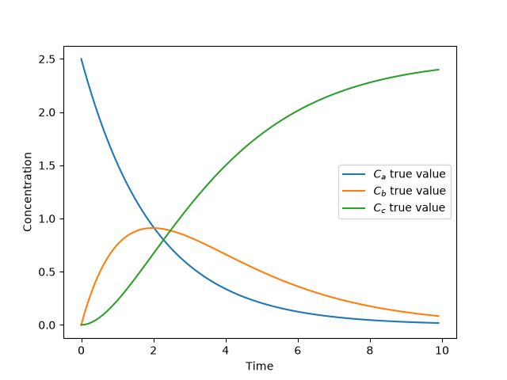
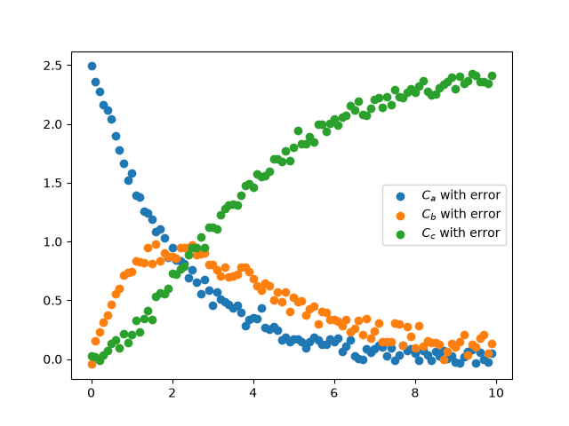
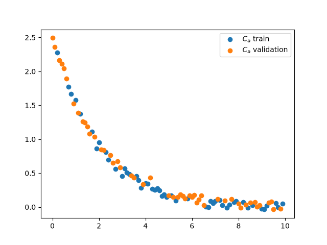
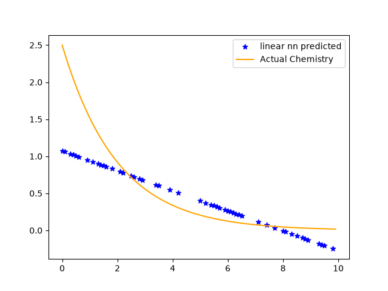
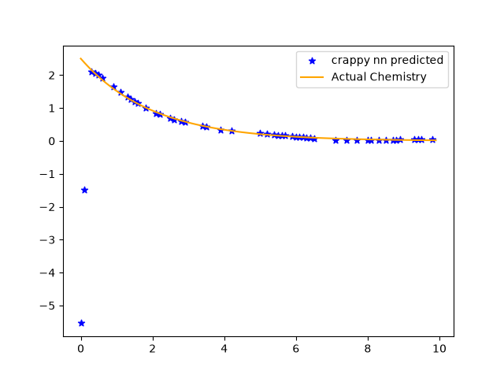

PINNs
Physics informed neural networks, or PINNs, are a way to coerce a neural network to give answers that agree with physical and chemical constraints. Essentially, they are a neural network with a custom loss function. This is an oversimplification, and excludes existing work where the backwards differentiation is leveraged to build constraints into hidden layers1, but for this example we will start with the simpler loss function definition.
To put this into practice, we will use a reaction model, and attempt to predict behavior using a conventional neural network, contrasted with a PINN.
Reaction Model
We can start our example with a simple chemistry model, with 2 irreversible reactions and 3 reactants, A, B, and C.
lets make a plot of these functions:

We can add a homoscedastic error to each concentration:

To start, we will focus on concentration A. We will split the data 50/50 for training and validation:

Non-Regularized NN
Lets start as simple as possible. We will use a linear model to start and make it more complex as we go.


Note on data regularization
Physics informed neural networks are a special case of regularization, so we will start by learning that concept. At it's most basic, regularization prevents overfitting. A model with many parameters can fit almost any dataset near perfectly, but this sort of naive approach can lead to a model that is unphysical. To paraphrase Enrico Fermi, with enough arbitrary parameters, you can fit an elephant, and with one more you can make it wiggle it's trunk23. We would like to avoid overfitting, thus we regularize.
References
-
H. Chen, G. E. C. Flores, and C. Li, “Physics-informed neural networks with hard linear equality constraints,” Computers & Chemical Engineering, vol. 189, p. 108764, Oct. 2024, doi: 10.1016/j.compchemeng.2024.108764. ↩
-
http://neuralnetworksanddeeplearning.com/ (book where I heard fermi quote) ↩
-
https://www.nature.com/articles/427297a (fermi quote about four parameter elephant) ↩
-
https://maziarraissi.github.io/PINNs/ ↩
-
https://medium.com/@theo.wolf/physics-informed-neural-networks-a-simple-tutorial-with-pytorch-f28a890b874a ↩